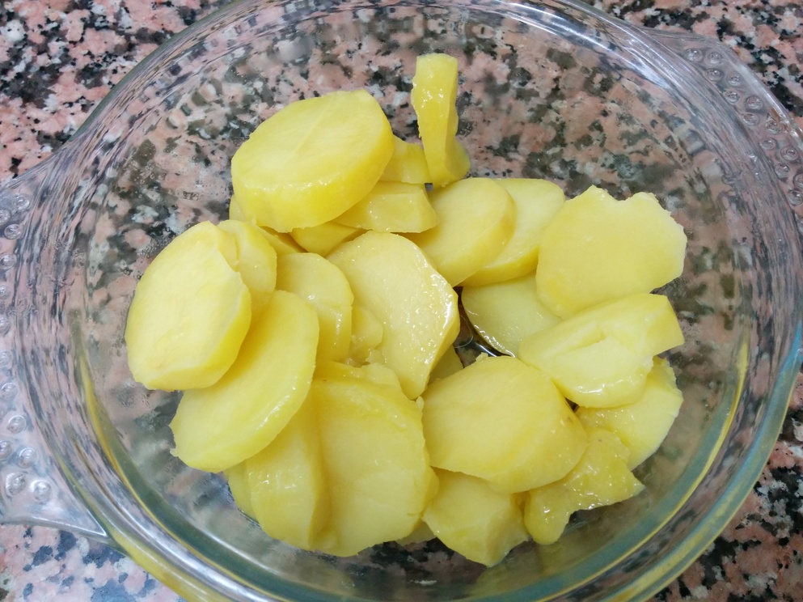
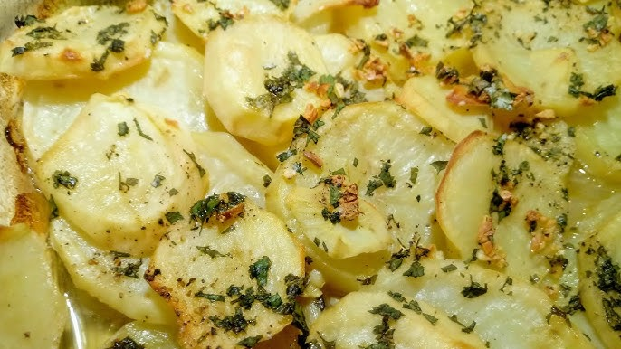
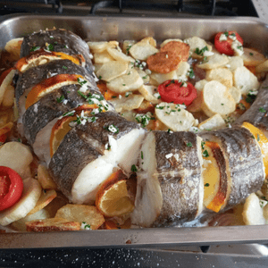
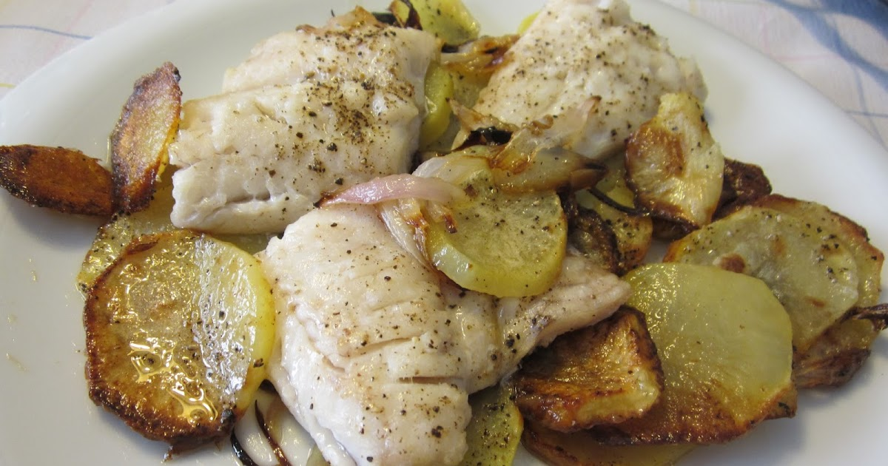

Tornar a l'inici
Lluç amb patates - Segon plat
Ingredients
- 2 lloms de lluç (aprox. 200 g cadascun)
- 400 g de patates
- 1 cullerada d'oli d'oliva
- Herbes aromàtiques al gust
- Sal i pebre
Pas a pas
- Preescalfar el forn a 200°C. Rentar i tallar 400 g de patates en rodanxes. 
- Posar les patates en una safata, amanir amb 1 cullerada d'oli, sal i herbes, coure 20 minuts. 
- Afegir els lloms de lluç sobre les patates, coure altres 12-15 minuts fins que el peix estigui fet. 
Resultat final
Aquí tens el plat llest per servir:

Tornar a l'inici de la recepta